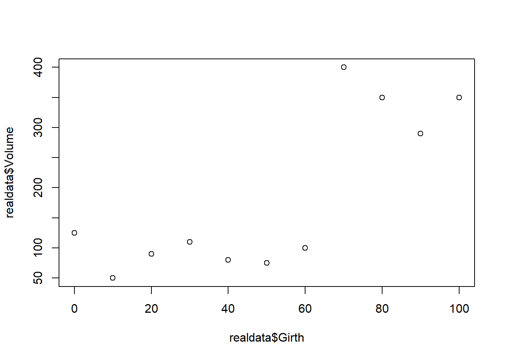
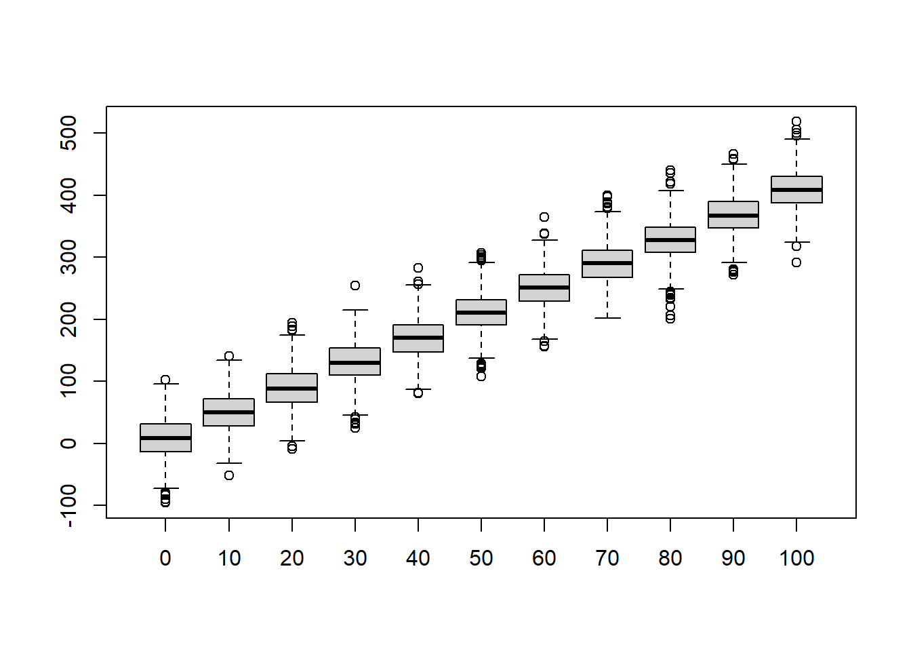
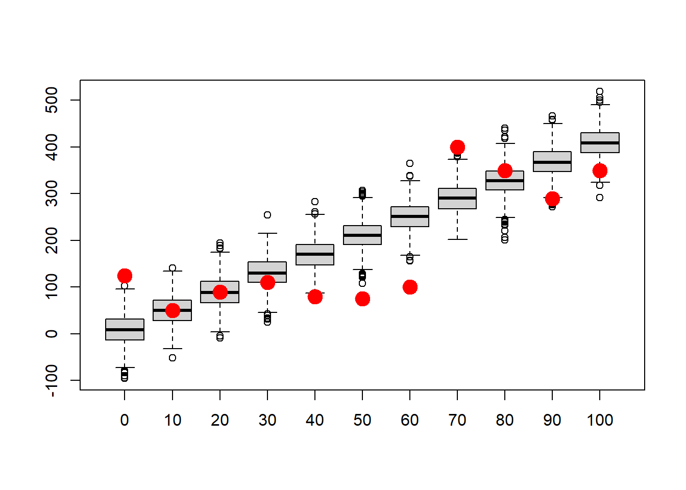
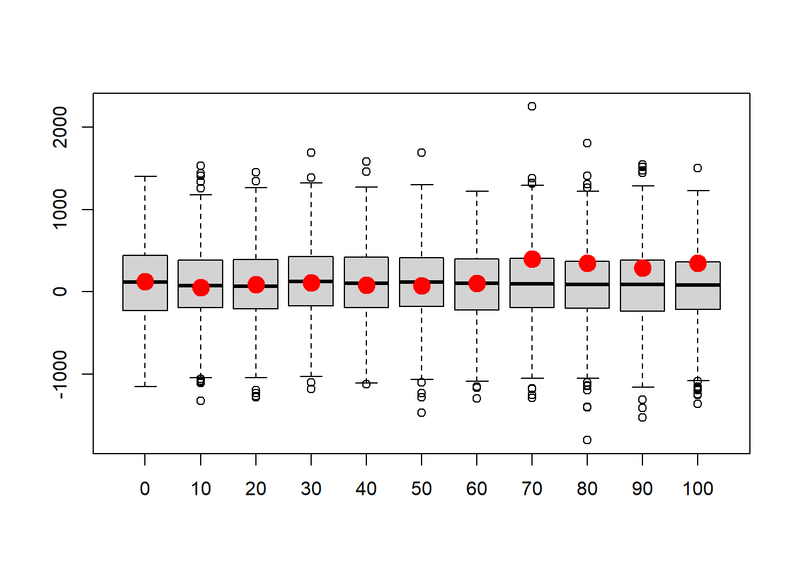
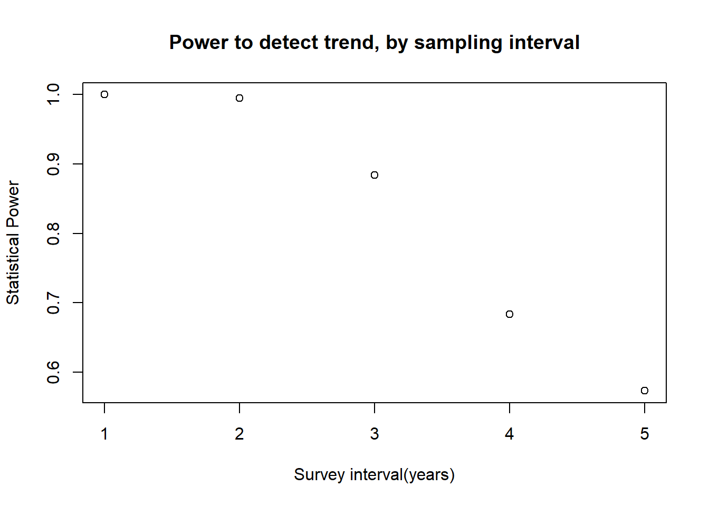

The Virtual Ecologist
NRES 746
Fall 2023
For those wishing to follow along with the R-based demo in class, click here for the companion R-script for this lecture.
NOTE: some of this demo borrows from Hadley Wickham’s presentation: Simulation
Why simulate ‘fake data’?
- Formalize your understanding of the data generating process (make
your assumptions explicit)
- if you can tell a computer how to do it, you REALLY understand it!
- it forces you to confront any underlying assumptions head-on
- it allows you to better understand the implications of your hypotheses (every model you build is essentially a hypothesis)
- Assess how sampling methods potentially affect information recovery
- Power Analysis! (how likely am I to pick up important signals from
this sampling design?)
- Sampling design! (what sampling design(s) will most effectively
allow me to address my research question?)
- Generate sampling distributions (e.g., CLT exercise, brute force z-test)
- Power Analysis! (how likely am I to pick up important signals from
this sampling design?)
- Assess goodness-of-fit (could your data have been produced by this
model?)
- Test whether model-fitting algorithms and statistical tests do what you think they should (e.g., estimate parameters correctly)! (test for bias, precision, etc.)
- Build intuition and proficiency for developing likelihood functions!
We have simulated data already (e.g., CLT, brute-force z-test)! Even bootstrapping is a form of data simulation…
Random number generators (sample “data” from known distributions)
# Random number generators -------------------------------
# (a key component of data simulation models- but usually not the whole story)
runif(1,0,25) # draw random numbers from various probability distributions
rpois(1,3.4)
rnorm(1,22,5.4)First argument: n, number of random draws you want
Subsequent arguments: parameters of the distribution
- Always check that the distribution is parameterized the way you expect (e.g., that the normal distribution is parameterized with a mean and standard deviation) – especially if you leave out the argument name in the random-number-generation functions!)
Short exercise #1:
- Generate 50 samples from \(N(10,5)\)
- Generate 1000 numbers from \(Poisson(50)\)
- Generate 10 numbers from \(Beta(0.1,0.1)\)
# Short exercise:
# Generate 50 samples from Normal(mean=10,sd=5)
# Generate 1000 samples from Poisson(mean=50)
# Generate 10 samples from Beta(shape1=0.1,shape2=0.1)
# Try some other distributions and parameters. NOTE: you can visualize probability densities easily using the "curve" function:
curve(dnorm(x,0,2),-10,10)# What happens when you try to use a discrete distribution?Building a data simulation model
For our purposes, a simulation model is any fully specified, (usually) stochastic, computer program/script for data generation.
Your data simulation model could be as simple as the random numbers you were just generating. For example, we could make an assumption that our sample data were independently generated from a random Poisson process with constant mean (\(\lambda\)).
In general, our simulation models will comprise both deterministic and stochastic components.
For example, the data generating model underlying ordinary linear regression consists of a deterministic component (\(y = ax + b\)) and a stochastic component (the residual error is independently drawn from a normal distribution).
decomposing ordinary linear regression:
First, let’s look at the deterministic component. The deterministic component maps covariate (predictor variable, or independent variable) values to an expected response. It is deterministic because the answer will be the same every time, given any specific input (covariate) value(s).
# SIMULATE DATA: ------------------
# decompose into deterministic and stochastic components (linear regression example)
## Deterministic component -----------------------------------------
# define function for transforming a predictor variable into an expected response (linear regression)
# Arguments:
# x: vector of covariate values (predictor variable)
# a: the intercept of a linear relationship mapping the covariate to an expected response
# b: the slope of a linear relationship mapping the covariate to an expected response
deterministic_component <- function(x,a,b){
linear <- a + b*x # specify a deterministic, linear functional form
return(linear)
}
xvals = seq(0,100,10) # define the values of a hypothetical predictor variable (e.g., tree girth)
expected_vals <- deterministic_component(xvals,175,-1.5) # use the deterministic component to determine the expected response (e.g., tree volume)
expected_vals## [1] 175 160 145 130 115 100 85 70 55 40 25plot(xvals,expected_vals) # plot out the relationship
# plot(xvals,expected_vals,type="l") # alternatively, plot as a lineNow, let’s look at the stochastic component (also known as the “noise”). Recall that a normal distribution is defined by a mean and a variance (or standard deviation). We can consider the deterministic component as representing the mean (expected) value of the response for any given value(s) of relevant covariates. Therefore, if we assume the “noise” is normally distributed, all we need to generate stochastic data for any given covariate value(s) is a variance, or standard deviation (the mean is already defined).
## Stochastic component --------------------------------------------
## define a function for transforming an expected (deterministic) response and adding a layer of "noise" on top!
# Arguments:
# x: vector of expected responses
# variance: variance of the "noise" component of your data simulation model
stochastic_component <- function(x,variance){
sd <- sqrt(variance) # convert variance to standard deviation
stochvals <- rnorm(length(x),x,sd) # add a layer of "noise" on top of the expected response values
return(stochvals)
}
# alternative: add the "residuals" onto the expected values.
# stochastic_component <- function(x,variance){
# sd <- sqrt(variance) # convert variance to standard deviation
# stochvals <- rnorm(length(x),0,sd) # generate the 'residuals'
# return(x+stochvals) # add a layer of "noise" on top of the expected response values
# }
### Simulate stochastic data!!
sim_vals <- stochastic_component(expected_vals,variance=500) # try it- run the function to add noise to your expected values.
plot(xvals,sim_vals) # plot it- it should look much more "noisy" now!
# ALTERNATIVELY:
sim_vals <- stochastic_component(deterministic_component(xvals,175,-1.5),500) # stochastic "shell" surrounds a deterministic "core" You can think of the deterministic component as the “signal” and the stochastic component as the “noise”. Most data-generating processes that we will consider have both components!
Much of statistics and machine learning involves trying to tease apart these components– i.e., to detect signals from ‘noisy’ data. This is especially true - and difficult - in the age of big data
Replication!
Okay, we’ve now generated a random data set…
But wherever there is randomness (stochasticity), we can get different results every time (that’s what it means to be random!). In such cases, a single output of the data generating model by itself has little meaning. However, we can extract a great deal of meaning if we run lots of replicates. The distribution of data across all replicates becomes the real result!
Goodness-of-fit
For example, let’s run a goodness-of-fit test. A goodness-of-fit test asks the question: can this model plausibly generate the observed data?
For example, consider a set of “real” data:
# Goodness-of-fit test! -------------------------------------
# Do the data fall into the range of plausible values produced by this model?
# Imagine you have the following "real" data (e.g., tree volumes).
realdata <- data.frame(Volume=c(125,50,90,110,80,75,100,400,350,290,350),Girth=xvals)
plot(realdata$Girth,realdata$Volume)
The following parameters together fully specify a data-generating model that we hypothesize is the model that generated our data. Is this fully specified linear regression model a good fit to our data?
intercept (a) = 10 # these parameters together specify a model that could have generated our data
slope (b) = 4
variance(var) = 1000
We can evaluate this question by brute force programming…
And we will, of course!
First we specify the data generating model. Then we simulate multiple datasets under this model that are comparable to our observed dataset (same sample size). Then we evaluate (visually for now) whether our data generating model is capable of generating our observed data.
# Simulate many datasets from our hypothesized data generating model (intercept=10,slope=4,variance=1000):
reps <- 1000 # specify number of replicate datasets to generate
samplesize <- nrow(realdata) # define the number of data points we should generate for each simulation "experiment"
simresults <- array(0,dim=c(samplesize,reps)) # initialize a storage array for results
exp_vals <- deterministic_component(realdata$Girth,a=10,b=4) # simulate the expected tree volumes for each measured girth value
for(i in 1:reps){ # for each independent simulation "experiment":
sim_vals <- stochastic_component(exp_vals,1000) # add stochastic noise
simresults[,i] <- sim_vals # store the simulated data for later
}
# now make a boxplot of the results
boxplot(t(simresults),xaxt="n") # (repeat) make a boxplot of the simulation results
axis(1,at=c(1:samplesize),labels=realdata$Girth) # add x axis labels 
Now let’s overlay the “real” data. This gives us a visual goodness-of-fit test!
# Now overlay the "real" data
# how well does the model fit the data?
boxplot(lapply(1:nrow(simresults), function(i) simresults[i,]),xaxt="n") # (repeat) make a boxplot of the simulation results
axis(1,at=c(1:samplesize),labels=realdata$Girth) # add x axis labels
points(c(1:samplesize),realdata$Volume,pch=20,cex=3,col="red",xaxt="n") # this time, overlay the "real" data 
How well does this model fit the data?
Is this particular model likely to produce these data? (we will revisit this concept more quantitatively when we get to likelihood-based model fitting!)
What about if we try an intercept-only null model with expected Volume of 100 and variance of 200000 ? What happens now?
# Let's simulate many datasets from a 'null' model (intercept=100,slope=0,variance=75000):
reps <- 1000 # specify number of replicate datasets to generate
samplesize <- nrow(realdata) # define the number of data points we should generate for each simulation "experiment"
simresults <- array(0,dim=c(samplesize,reps)) # initialize a storage array for results
for(i in 1:reps){ # for each independent simulation "experiment":
exp_vals <- deterministic_component(realdata$Girth,a=100,b=0) # simulate the expected tree volumes for each measured girth value
sim_vals <- stochastic_component(exp_vals,200000) # add stochastic noise
simresults[,i] <- sim_vals # store the simulated data for later
}
# now make a boxplot of the results
boxplot(lapply(1:nrow(simresults), function(i) simresults[i,]),xaxt="n") # (repeat) make a boxplot of the simulation results
axis(1,at=c(1:samplesize),labels=realdata$Girth) # add x axis labels
points(c(1:samplesize),realdata$Volume,pch=20,cex=3,col="red",xaxt="n") # this time, overlay the "real" data 
Could this model have generated the data?
Is this model likely to be the model that generated the data? What’s your intuition?
Is this model useful?
Generating sampling distributions (i.e., simulate the distribution of test statistics under a null hypothesis)
A null hypothesis can usually be expressed as a data-generating model.
If so, you should be able to generate sampling distributions of any test statistic under your null distribution.
For example, the ‘brute force’ z-test from the first lecture!
NOTE: Frequentist statistical tests are based on a single sample that is one of an theoretically infinite number of potential samples. The interpretation of the results is based on the idea of hypothetical sample replication (e.g., “if the null hypothesis were true, and the experiment were replicated lots and lots of times, results as or more extreme than the observed results could be expected from less than 1% of replicates”)
Power analysis!! (can my sampling design detect the “signal”?)
When designing experiments or field monitoring protocols, we often ask questions like:
- What sample size do I need to be able to effectively test my hypothesis?
- What is the smallest effect size I can reliably detect with my sampling design?
- What sources of sampling or measurement error should I make the greatest effort to minimize?
In such cases, probably the most straightforward (yet not always the most efficient) way to address these questions is to simulate data under various sampling strategies and signal/noise ratios, and see how well you can recover the “true” signal through the noise!
Power analysis, example
Imagine we are designing a monitoring program for a population of an at-risk species, and we want to have at least a 75% chance of detecting a decline in abundance of 25% or more over a 25 year period. Let’s assume that we are using visual counts, and that the probability of encountering each member of the population is 2% per person-day. The most recent population estimate was 1000: here we will assume that is known with certainty.
What we know:
- A single surveyor has a 2% chance of detecting each animal in the
population in a single day of surveying
- The initial abundance is 1000
- We want to be able to detect a decline as small as 25% over 25 years with at least 75% probability.
First, let’s set the groundwork by making some helper functions (break the problem into smaller chunks).
This function takes the true number in the population and returns the observed number:
# Power analysis example ---------------------------------
# designing a monitoring program for a rare species
### first, let's develop some helper functions:
## helper function 1 ---------------------------
# function for computing the number of observed/detected animals in a single survey
# Arguments:
# TrueN: true population abundance
# surveyors: number of survey participants each day
# days: survey duration, in days
NumObserved <- function(TrueN=1000,surveyors=1,days=3){
probPerPersonDay <- 0.02 # define the probability of detection per animal per person-day [hard-coded- potentially bad coding practice!]
probPerDay <- 1-(1-probPerPersonDay)^surveyors # define the probability of detection per animal per day (multiple surveyors)(animal must be detected at least once)
probPerSurvey <- 1-(1-probPerDay)^days # define the probability of detection per animal for the entire survey
nobs <- rbinom(1,size=TrueN,prob=probPerSurvey) # simulate the number of animals detected!
return(nobs)
}
NumObserved(TrueN=500,surveyors=2,days=7) # test the new function## [1] 115This function gives us the current-year abundance using last year’s abundance and trend information
## helper function 2 -----------------------------
## function for computing expected abundance dynamics of a declining population (deterministic component!)
# Arguments:
# LastYearAbund: true population abundance in the previous year
# trend: proportional change in population size from last year
ThisYearAbund <- function(LastYearAbund=1000,trend=-0.03){
CurAbund <- LastYearAbund + trend*LastYearAbund # compute abundance this year
CurAbund <- floor(CurAbund) # can't have fractional individuals!
return(CurAbund)
}
ThisYearAbund(LastYearAbund=500,trend=-0.03) # test the new function## [1] 485# NOTE: we could introduce stochastic population dynamics (or density dependence, etc!) for a more realistic model, but we are omitting this here. This function will simulate a single dataset (time series of observations over a given number of years)!
## function: simulate monitoring data ----------------------------
# develop a function for simulating monitoring data from a declining population
# Arguments:
# initabund: true initial population abundance
# trend: proportional change in population size from last year
# years: duration of simulation
# observers: number of survey participants each day
# days: survey duration, in days
# survint: survey interval, in years (e.g., 2 means surveys are conducted every other year)
SimulateMonitoringData <- function(initabund=1000,trend=-0.03,years=25,observers=1,days=3,survint=2){
prevabund <- initabund # initialize "previous-year abundance" at initial abundance
detected <- numeric(years) # set up storage variable
for(y in 1:years){ # for each year of the simulation:
thisAbund <- ThisYearAbund(prevabund,trend) # compute the current abundance on the basis of the trend
detected[y] <- NumObserved(thisAbund,observers,days) # sample the current population using this monitoring scheme
prevabund <- thisAbund # set this years abundance as the previous years abundance (to set up the simulation for next year)
}
surveyed <- c(1:years)%%survint==0 # which years were surveys actually performed?
detected[!surveyed] <- NA # if the survey is not performed that year, return a missing value
return(detected) # return the number of individuals detected
}
SimulateMonitoringData(initabund=1000,trend=-0.03,years=25,observers=1,days=3,survint=2) # test the new function## [1] NA 60 NA 54 NA 46 NA 44 NA 41 NA 43 NA 47 NA 32 NA 31 NA 33 NA 34 NA 33 NANote that we are using NA to indicate years where no survey was conducted. A zero value would mean something very different than an NA.
Now we can develop a function for determining if a decline was in fact detected by the method:
## function: assessing whether or not a decline was detected ------------------------
# Arguments:
# monitoringData: simulated results from a long-term monitoring study
# alpha: define acceptable type-I error rate (false positive rate)
IsDecline <- function(monitoringData,alpha=0.05){
time <- 1:length(monitoringData) # vector of survey years
model <- lm(monitoringData~time) # for now, let's use ordinary linear regression (perform linear regression on simulated monitoring data)
p_value <- summary(model)$coefficients["time","Pr(>|t|)"] # extract the p-value
isdecline <- ifelse(summary(model)$coefficients["time","Estimate"]<0,TRUE,FALSE) # determine if the simulated monitoring data determined a "significant" decline
sig_decline <- ifelse((p_value<=alpha)&(isdecline),TRUE,FALSE) # if declining and significant trend, then the monitoring protocol successfully diagnosed a decline
return(sig_decline)
}
IsDecline(monitoringData=c(10,20,NA,15,1),alpha=0.05) # test the function## [1] FALSENow we can develop a “power” function that gives us the statistical power for given monitoring scenarios…
This is part of this week’s lab assignment!
## Review lab exercise (lab 2) ----------------------------
## develop a "power" function to return the statistical power to detect a decline under alternative monitoring schemes...
nreps <- 10000 # set number of replicate monitoring "experiments"
initabund <- 1000 # set initial population abundance.
GetPower <- function(nreps=nreps,initabund=initabund,trend=-0.03,years=25,observers=1,days=3,survint=2,alpha=0.05){
# fill this in!
return(Power)
}## The statistical power to detect a decline for the default parameters is: 0.394And we can evaluate what types of monitoring programs might be acceptable:
